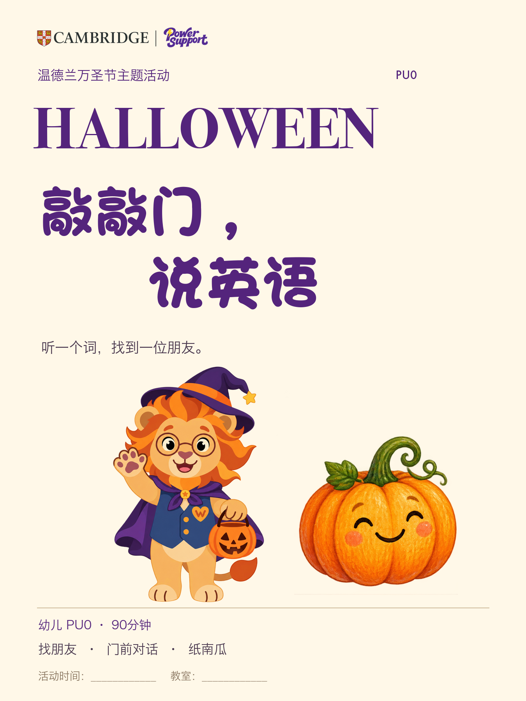
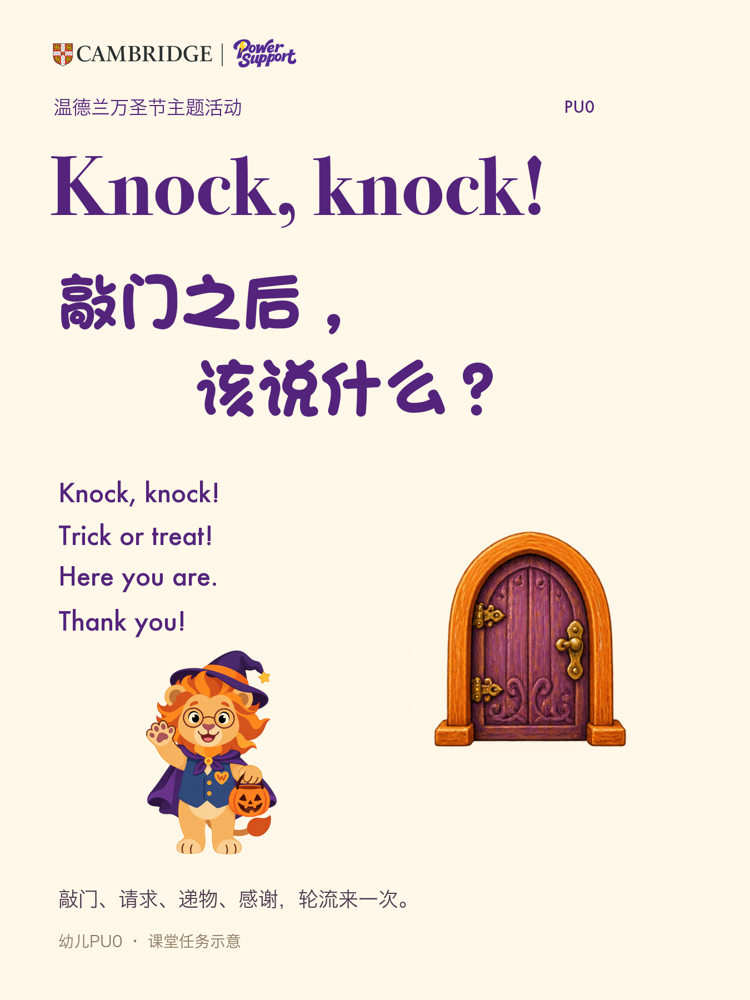
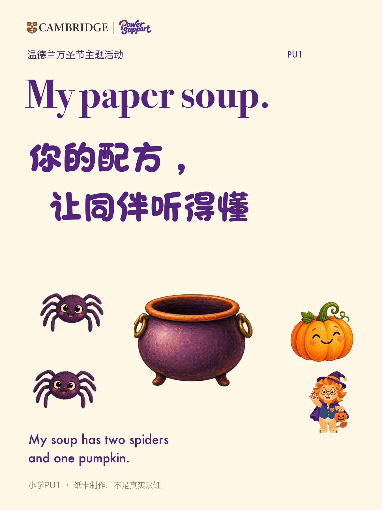

幼儿 PU0｜27页
找朋友 → 门前对话 → 纸南瓜
打开幼儿课件逐页授课流程老师先看这里｜R5声音修订2＋配套v1小狮版
幼儿第20页由孩子自己说，点门有敲门声；小学28/30页先放两类食材才读配方。
第1页A3海报；第2页索引；3—5词卡；6—8记忆；9卡背；10纸南瓜；11五官；12家庭卡。
打开幼儿PDF第1页A3海报；第2页索引；3—6图词卡；7卡背；8排序；9故事；10—12配方；13家庭卡。
打开小学PDF1欢迎牌；2A3门；3—6拼接门；7—11挂旗；12—13区牌；14—16头饰；17—18对话；19纸糖；20拍照牌；21组装。
打开共用PDF默认幼儿选南瓜/猫/蝙蝠三对，小学先四对。放大门四张A4重叠10mm，拼成约38×54cm。日期、教室和需打印的份数由本班确认。
奶油白留白、温德兰紫金、万圣节温迪小狮。日期/教室尚待填，刘玥确认后使用。点图片看大图，按图片另存；文案和口播在下方。

PU0 · 01 · 活动主海报
下载PNG
PU0 · 02 · 课堂任务
下载PNGPU0 · 03 · 作品任务
下载PNGPU1 · 01 · 活动主海报
下载PNGPU1 · 02 · 课堂任务
下载PNG
PU1 · 03 · 作品任务
下载PNG内容、难度时间、声音互动、打印道具四项逐一检查。先重点页，再从头到尾看自己场次。下周开展，建议24小时内集中反馈，活动前3天修订、前2天由刘玥确认、前1天设备预播与试摆。
打开审阅检查表最终须确认具体版本、活动日期/时段/教室/分工、宣传图文和打印清单。此站不自动保存或上传意见；请复制结果发给刘玥。HTML通过后仍由刘玥另行启动原生PPT。未实际印刷或教师试教定稿。